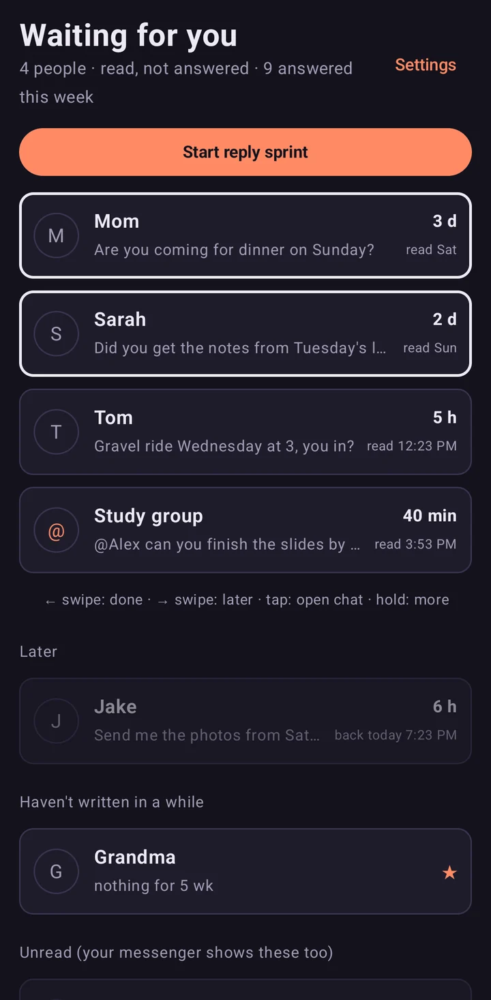
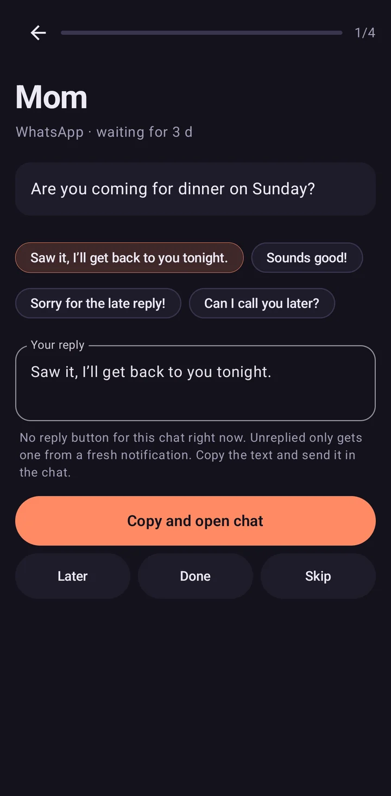
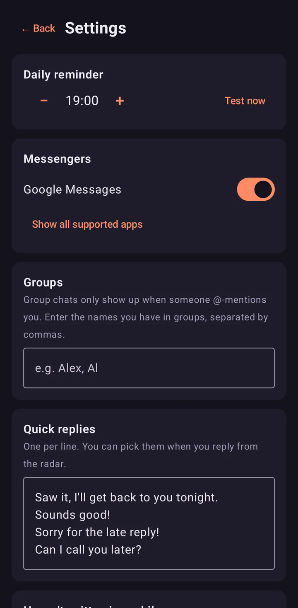
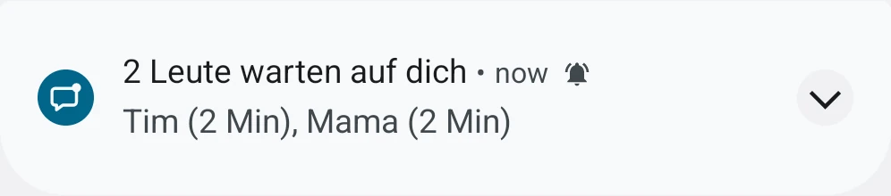

Who is still waiting for your reply
An ADHD texting app that lists chats you read but never answered.
Free, for Android 8 and newer. No account, no internet permission.

Opening a chat clears the unread badge. Unreplied keeps the chat until you answer.
Three screens do the work
Waiting list
Oldest first, with how long each person has waited. Swipe left when you answered, right for later.

Reply sprint
One person at a time, with your own quick replies, sent through the messenger’s reply button.

Settings
Pick the messengers, the reminder hour and your quick replies. A check log shows what Android reports.
How a chat moves through it
You open a chat
It joins the list with the time you read it.
You reply from the notification
Unreplied sees your message and marks the chat done.
You reply inside the messenger
Swipe the entry left. Android tells apps nothing about it.
Not now
Swipe right: it returns in three hours, tonight or tomorrow morning.
Your reminder hour
One notice with everyone who waits, never one per message.
Nothing leaves your phone
- No internet permission
- The app cannot send anything anywhere. For automatic updates there is Unreplied-Updates.apk: it asks GitHub for new versions and uses the internet for nothing else.
- Stored per chat
- The name, the times and the first 80 characters, in private app storage, excluded from backups.
- Open source
- GPL-3.0, with one button in the settings that deletes everything.
Messengers it reads
- WhatsApp Business
- Signal and Molly
- Telegram and Telegram X
- Threema
- Google Messages
- Fossify SMS and QKSMS
- Instagram, Discord and Snapchat, off until you switch them on
Before you install
How do I remember to text people back?
Unreplied keeps the list for you. It notices when you open a chat on WhatsApp, Signal, Telegram or SMS and don’t reply, and shows everyone who is waiting, oldest first. Once a day it sends one reminder, never one per message.
Is there an app for unanswered WhatsApp messages?
Yes. Unreplied is a free Android app that tracks WhatsApp chats you read but didn’t answer. WhatsApp itself only marks chats unread until you open them.
Does Unreplied read my messages or upload them?
It reads the notifications of the messengers you switch on and keeps the name, the times and the first 80 characters of the last message on your phone. The app has no internet permission, so it cannot send anything anywhere.
Why is texting back so hard with ADHD?
Many people with ADHD read a message, plan the answer in their head and get pulled away before sending it. Once the chat is opened, the unread badge is gone and the reminder with it. Unreplied brings that reminder back.
Is there an iPhone version?
No. Unreplied needs Android’s notification access, which iOS doesn’t offer to apps.
Unreplied auf Deutsch
Unreplied (früher Antwort-Radar) ist eine WhatsApp-Erinnerung für unbeantwortete Nachrichten. Du liest, antwortest im Kopf und schickst nie ab: Die App merkt sich, wer seit wann wartet, und meldet sich einmal am Tag.
APK herunterladen